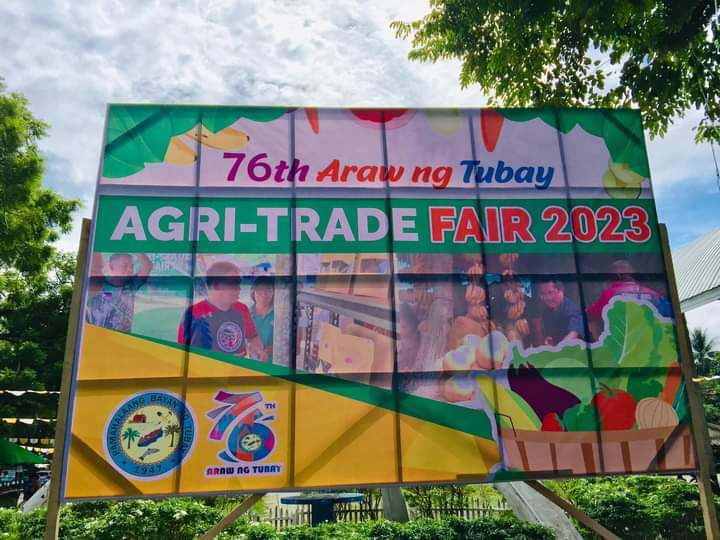
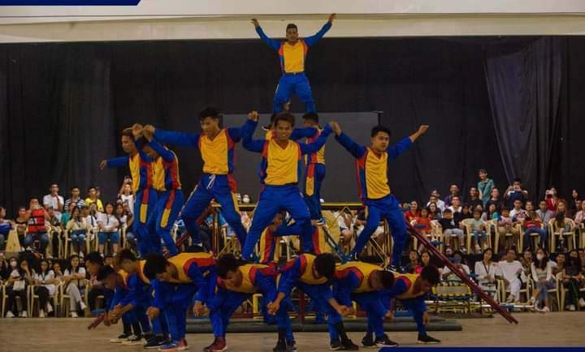

1. Origin and Significance:
- The Araw ng Tubay is a commemoration of the founding and establishment of the municipality of Tubay.
- It celebrates the history, culture, and achievements of the people of Tubay.
2. Timing and Duration:
- The Araw ng Tubay is typically celebrated every year on the 1st of June.
- The celebration usually lasts for several days, with various activities and events taking place.
3. Festival Activities:
- The main highlight of the celebration is a grand parade featuring colorful floats, marching bands, and cultural dance performances.
- There are also cultural presentations, such as indigenous music and dance performances, showcasing the rich cultural heritage of the municipality.
- Local food stalls and vendors offer a variety of traditional and local delicacies.
- Sports competitions, such as basketball, volleyball, and other local games, are organized during the celebration.
- Community gatherings, civic activities, and other social events are also part of the Araw ng Tubay celebrations.

4. Importance to the Local Community:
- The Araw ng Tubay is an important event that brings the people of Tubay together to celebrate their shared history, culture, and identity.
- It serves as a platform to showcase the unique traditions, customs, and achievements of the Tubay community.
- The celebration also promotes local pride and unity among the residents, strengthening their sense of community and belonging.
- The event attracts visitors and tourists, contributing to the local economy through increased tourism and commerce.

The Araw ng Tubay is a significant annual celebration that honors the history, culture, and identity of the municipality of Tubay, Agusan del Norte, Philippines.